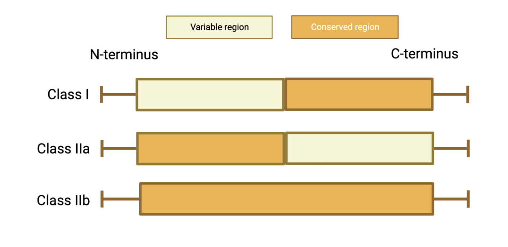
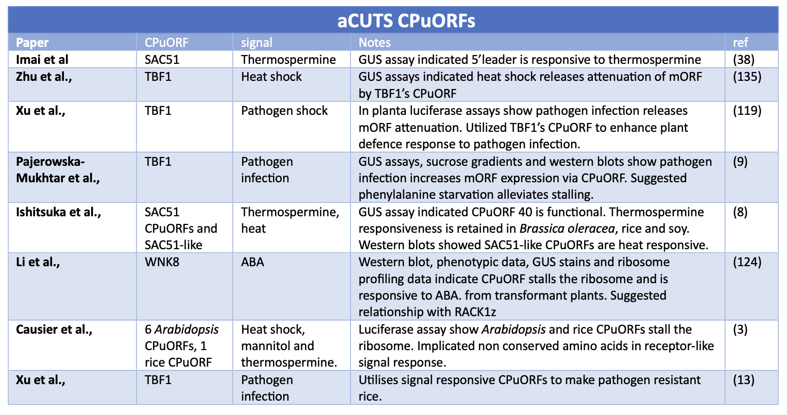
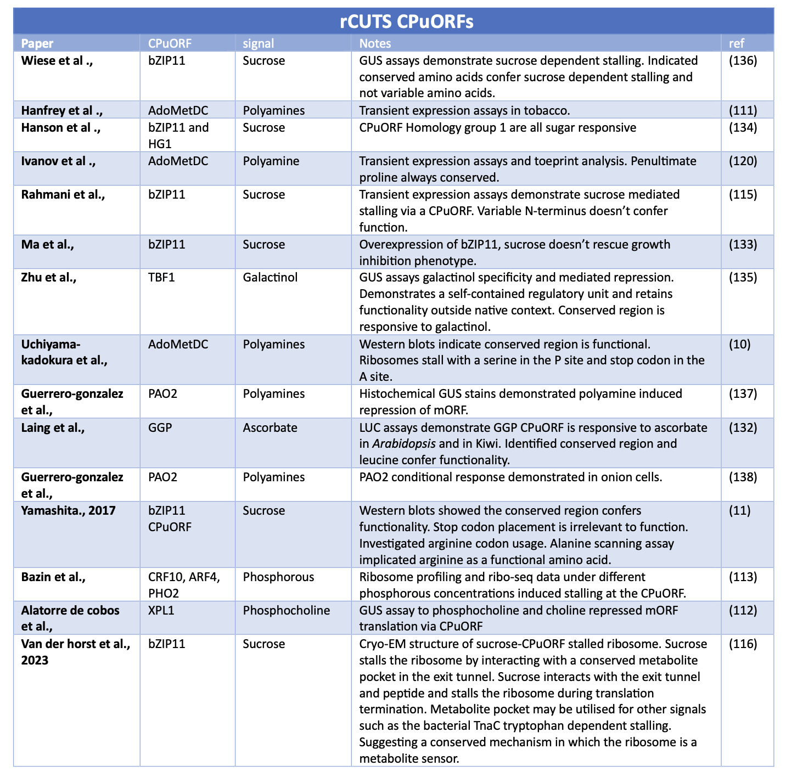

Initial investigations into CPuORF peptide sequences distinguished differential patterns in amino acid conservation (Figure 3). A selection of CPuORFs displayed conservation exclusively at the C-terminus, whereas other CPuORFs displayed conservation throughout or at the N-terminus. CPuORFs were classified based upon their pattern of conservation. The CPuORF classification system was most recently updated by Causier at al., to differentiate those that displayed conservation exclusively at the N-terminus and those conserved throughout (Figure 3) (DOI: 10.1111/pce.14277). CPuORFs are classified into either Class I (C-terminal conservation), Class IIa (N-terminal conservation) or Class IIb (whole peptide conservation).
Figure 3. A schematic to show conservation patterns between CPuORF classes. CPuORFs can be classified into Class I, IIa and IIb. Conservation is characterised by the conservation of the N- and C- termini. Class I and Class IIb are conserved at the C-terminus. Class IIa and IIb CPuORFs are conserved at their N-termini. Class IIa is exclusively conserved at its N-terminus, whereas IIb is conserved throughout.
Below are literature tables of studies that have demonstrated that CPuORFs alongside a signal can stall the ribosome (rCUTS) and other CPuORFs alongside a signal can facilitate translation re-initiation and increased levels of mORF expression (aCUTS)
 Table 1 and 2. Summary of key studies identifying CPuORFs that conditionally express their downstream mORF. The table has two sections 1) Studies that have identified a signal increases mORF protein expression via a CPuORF. 2) Studies that have identified a signal represses mORF protein expression via a CPuORF.
Figure 4. A schematic representation of the CPuORF Conditional uORF Translational Stalling mechanism (CUTS). Repressive CUTS (rCUTS) illustrates when a specific signal enhances or triggers ribosomal stalling by binding to a conserved metabolite pocket in the exit tunnel. Resulting in reduced mORF protein production compared to control conditions. The default: A CPuORF nascent peptide inherently stalls the ribosome during translation independent of a external signal. The nascent peptide likely forms interactions with exit tunnel proteins rRNA nucelotides. Consequently, leading to decreased mORF protein production when compared to control conditions. Activator CUTS (aCUTS) demonstrates how a signal terminates ribosomal stalling by the nascent CPuORF peptide. The signal may bind to the ribosome and/or CPuORF peptide and enabling the ribosome to re-initiate translation at the downstream mORF and promoting mORF protein production.